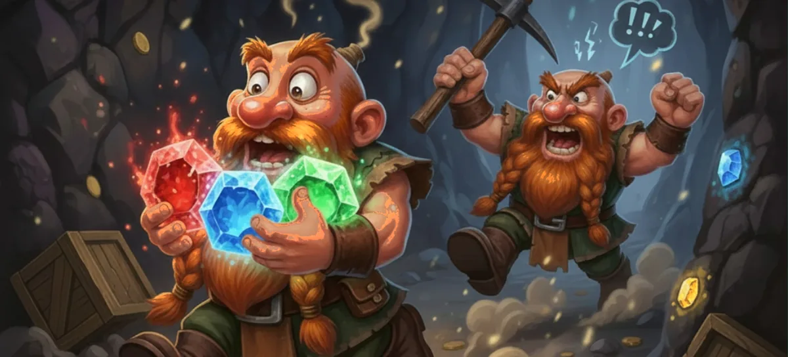

Push your luck · Take that
Mine Dwarfz
Niente fiabe e niente giardini: qui si gioca sporco.
- 2–5Giocatori
- 8+Età
- 10–20 minDurata
- 80Carte
Il gioco
Nani senza scrupoli si sfidano per estrarre gemme preziose da una miniera instabile. Trova, ruba, scambia le gemme con i tuoi avversari o divertiti a rovinare i loro piani. Nessuno è eliminato in questo gioco rapido e avvincente.
Ma attenzione, chi troppo vuole spesso finisce sepolto nel crollo della miniera. Chi sarà il nano più ricco ad uscire (...vivo) dal monte Generoso?
Punti di forza
- Interazione continua: giocate veloci utilizzabili durante il turno avversario.
- Non sei mai fuori dall'azione: se hai poche risorse, puoi provare le vittorie alternative.
- Alcune carte ribaltano la situazione, altre la modificano a tuo favore.
- Ritmo veloce per partite adatte a serate tra amici.
- Poche regole, molta azione.
Meccaniche
- Take That
- Push Your Luck
- Hand Management
- Instant Response